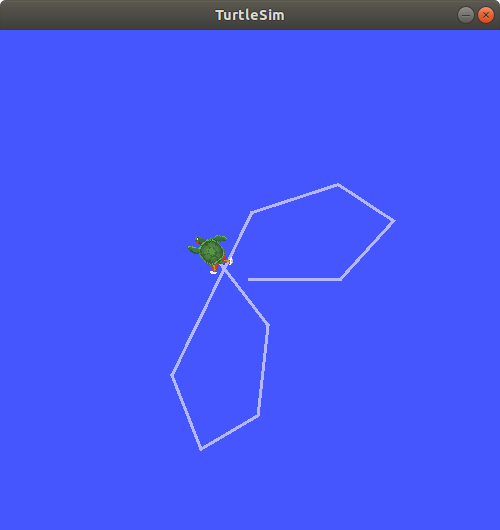

You're reading the documentation for a development version. For the latest released version, please have a look at Galactic.
记录和回放数据
目标：记录就某一主题发表的数据，以便你可以随时回放和检查。
Tutorial level: Beginner
Time: 10 minutes
目录
背景
ros2 bag 是一个命令行工具，用于记录系统中发布的主题数据。它积累传递给任意数量主题的数据，并将其保存在数据库中。然后可以重放数据以再现测试和实验的结果。记录主题也是分享你的工作并让别人重新创造它的好方法。
先决条件
您应该已经安装了 ros2 bag 作为常规 ROS2 设置的一部分。
如果你在 Linux 上用 debian 安装，但是你的系统不能识别这个命令，那么像这样安装它：
sudo apt-get install ros-xin-ros2bag \
ros-xin-rosbag2-storage-default-plugins
本教程讲述了之前教程中涉及的概念，如 nodes 和 topics。它还使用了 turtlesim 包。
像往常一样，不要忘记在 你打开的每一个新终端 中为 ROS 2 激活源代码。
任务
1 设置
您将在 turtlesim 系统中记录您的键盘输入，以便稍后保存和重放，因此首先启动 /turtlesim 和 /teleop_turtle 节点。
打开一个新的终端并运行：
ros2 run turtlesim turtlesim_node
打开另一个终端并运行：
ros2 run turtlesim turtle_teleop_key
让我们也创建一个新目录来存储我们保存的记录，这是一个良好的做法：
mkdir bag_files
cd bag_files
2 选择一个主题
ros2 bag 只能记录发表的主题的数据。要查看系统主题的列表，打开一个新的终端并运行命令：
ros2 topic list
这将返回：
/parameter_events
/rosout
/turtle1/cmd_vel
/turtle1/color_sensor
/turtle1/pose
在主题教程中，您了解到 /turtle_teleop 节点在 /turtle1/cmd_vel 主题上发布命令，使海龟在 turtleim 中移动。
要查看 /turtle1/cmd_vel 发布的数据，使用命令：
ros2 topic echo /turtle1/cmd_vel
一开始什么都不会显示出来，因为 teleop 没有公布任何数据。回到你运行遥控终端的地方，选择它，让它激活。使用方向键移动海龟，您将看到正在运行 ros2 topic echo 的终端上发布的数据。
linear:
x: 2.0
y: 0.0
z: 0.0
angular:
x: 0.0
y: 0.0
z: 0.0
---
3 ros2 bag record
要记录发布到主题的数据，请使用命令语法：
ros2 bag record <topic_name>
在对选定的主题运行此命令之前，打开一个新的终端并移动到前面创建的 bag_files 目录中，因为 rosbag 文件将保存在运行它的目录中。
运行以下命令：
ros2 bag record /turtle1/cmd_vel
您将在终端中看到以下消息（日期和时间将会不同）：
[INFO] [rosbag2_storage]: Opened database 'rosbag2_2019_10_11-05_18_45'.
[INFO] [rosbag2_transport]: Listening for topics...
[INFO] [rosbag2_transport]: Subscribed to topic '/turtle1/cmd_vel'
[INFO] [rosbag2_transport]: All requested topics are subscribed. Stopping discovery...
现在 ros2 bag 正在记录发表在 /turtle1/cmd_vel 主题上的数据。回到 teleop 终端，再次移动海龟。这些动作并不重要，但试着在稍后重放数据时找出一个可识别的模式。

按 {kbd}`Ctrl`+{kbd}`C` 停止录制。
数据将在一个名为 rosbag2_year_month_day-hour_minute_second 的包文件中积累。
3.1 记录多个主题
您还可以记录多个主题，以及更改 ros2 bag 保存到的文件的名称。
执行如下命令：
ros2 bag record -o subset /turtle1/cmd_vel /turtle1/pose
-o 选项允许您为您的包文件选择一个唯一的名称。下面的字符串（在本例中是 subset）是文件名。
要一次记录多个主题，只需用空格分开列出每个主题。
您将看到以下消息，确认正在记录这两个主题。
[INFO] [rosbag2_storage]: Opened database 'subset'.
[INFO] [rosbag2_transport]: Listening for topics...
[INFO] [rosbag2_transport]: Subscribed to topic '/turtle1/cmd_vel'
[INFO] [rosbag2_transport]: Subscribed to topic '/turtle1/pose'
[INFO] [rosbag2_transport]: All requested topics are subscribed. Stopping discovery...
你可以移动海龟，完成后按 {kbd}`Ctrl`+{kbd}`C`。
注解
您可以向命令添加另一个选项 -a，它记录系统上的所有主题。
4 ros2 bag info
你可以通过运行：
ros2 bag info <bag_file_name>
在 subset 包文件上运行此命令将返回文件的信息列表：
ros2 bag info subset
Files: subset.db3
Bag size: 228.5 KiB
Storage id: sqlite3
Duration: 48.47s
Start: Oct 11 2019 06:09:09.12 (1570799349.12)
End Oct 11 2019 06:09:57.60 (1570799397.60)
Messages: 3013
Topic information: Topic: /turtle1/cmd_vel | Type: geometry_msgs/msg/Twist | Count: 9 | Serialization Format: cdr
Topic: /turtle1/pose | Type: turtlesim/msg/Pose | Count: 3004 | Serialization Format: cdr
要查看各个消息，您必须打开数据库（在本例中是 sqlite3）来检查它，这超出了 ROS 2 的范围。
5 ros2 bag play
在播放包文件前，请在终端上输入 {kbd}`Ctrl`+{kbd}`C`。然后确保 turtlesim 窗口是可见的，这样你就可以看到包文件的运行。
输入命令：
ros2 bag play subset
终端将返回消息：
[INFO] [rosbag2_storage]: Opened database 'subset'.
你的海龟将遵循你在记录时输入的相同路径（虽然不是 100% 准确；Turtlesim 对系统时间的微小变化非常敏感）。
因为 subset 文件记录了 /turtle1/pose 主题，只要 turtlesim 在运行，ros2 bag play 命令就不会退出，即使你不移动。
这是因为只要 /turtlesim 节点是活动的，它就会定期在 /turtle1/pose 主题上发布数据。您可能已经注意到，在上面的 ros2 bag info 示例结果中 /turtle1/cmd_vel 主题的 Count 信息只有9；这是我们在录音时按方向键的次数。
注意 /turtle1/pose 的 Count 值超过 3000；当我们记录的时候，关于这个话题的数据发表了 3000 次。
要了解位置数据发布的频率，可以运行以下命令：
ros2 topic hz /turtle1/pose
Next steps
You’ve completed the “Beginner: CLI Tools” tutorials! The next step is tackling the “Beginner: Client Libraries” tutorials, starting with 创建工作区.